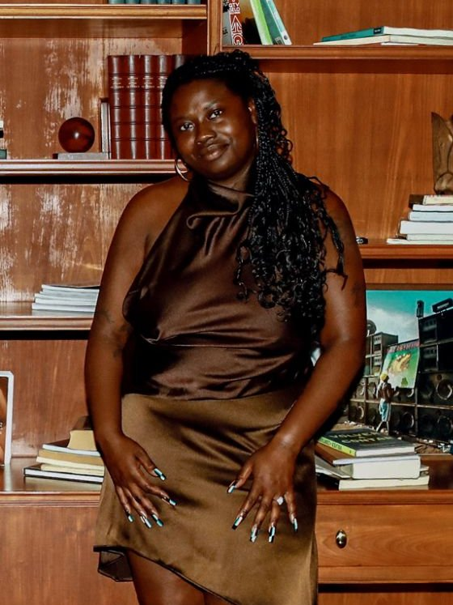

Co-founder
Joshua German
Leads creative strategy, production, and editorial direction. Hosts The Eclectic Polymath and Approachable AI inside the Network.
The Curious & Creative Company · Los Angeles
Curious & Creative is a Los Angeles creative company built by Joshua German and Janel Moore. We run a media network, produce photography, video, editing, and podcasts through our studio, and advise founders, brands, and marketing teams on culture, audience, and AI. The through line is simple: find the real story, make it well, and build the system that helps it travel.
Our media network: original shows and the social channels around them, hosts developed over time, published across podcast and social platforms.
Explore the NetworkWhere we make work for clients: photography, video, editing, websites, and podcasts produced end to end, with event coverage as a specialty of the house.
Explore the StudioWhere we help brands and small businesses reach their audiences: brand and cultural strategy, audience and content systems, podcast strategy, and AI.
Explore the ConsultancyThe Network is our media network. We build original shows and the social channels around them, develop hosts and personalities, and publish across podcast and social platforms. It starts with shows like The Eclectic Polymath, Approachable AI, God is Brazilian, and Too Much to Tweet, and it grows the way modern media networks grow: show by show, page by page, audience by audience.
Ideas, new episodes, and experiments, when there's something worth sending. Delivered through Substack.
Flagship shows
The Studio is where we make work for clients. We shoot photography and video, we edit, we build websites, and we produce podcasts end to end. Event coverage is a specialty of the house: documentary stills and video of presentations, launches, performances, and gatherings, captured as the room actually felt. Photography here is Curious & Creative work from start to finish. You can follow the photography day to day on Instagram at @viewsbygerm.
Services
The Consultancy is where we help brands and small businesses reach their audiences and improve their marketing. The work covers brand and cultural strategy, audience and content systems, podcast strategy, and AI: workflow design, enablement, and hands on training that teaches teams to use AI in their real work. The Gen Alpha Intelligence Lab, our research product on the next generation of audiences, sits here as proof that the strategy is backed by original research. Start with a Cultural Opportunity Sprint, an AI Workflow Audit, a Podcast Strategy Sprint, or a Fractional Creative Strategy block.
Curious & Creative is the company Joshua German and Janel Moore are building in Los Angeles. Joshua leads creative strategy, production, and editorial direction. Janel leads on technology, finance, and operations, and she is a creative partner in her own right, including as the host of Too Much to Tweet. Together they run a media network, a production studio, and a consultancy, and the three parts feed each other: the network keeps their instincts close to real audiences, the studio keeps their craft honest, and the consultancy turns both into judgment other people can hire.
Leads creative strategy, production, and editorial direction. Hosts The Eclectic Polymath and Approachable AI inside the Network.

Brings technology, finance, fundraising, and campaign operations, and is a creative partner in her own right as the host of Too Much to Tweet inside the Network.
Tell us what you are building and which part of the house it belongs in. Every inquiry lands in our shared company inbox at admin@curiousandcreative.co, and that is where our reply will come from.